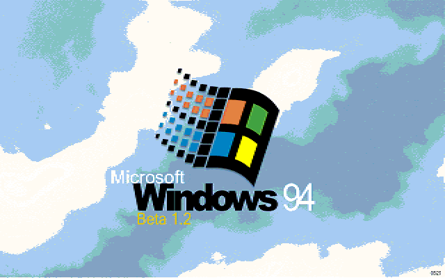
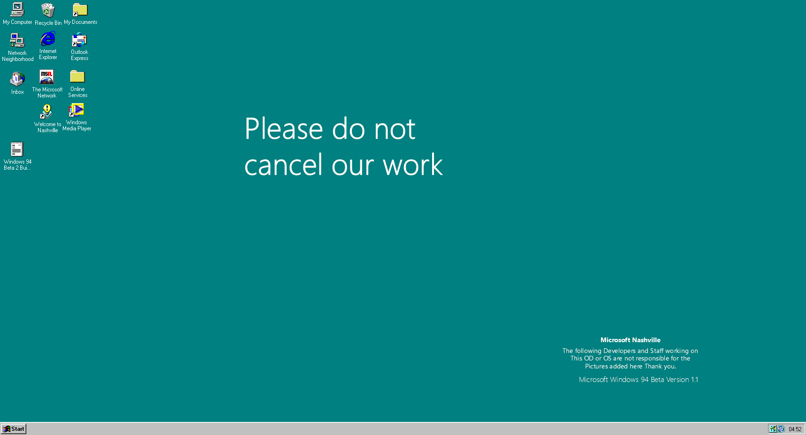
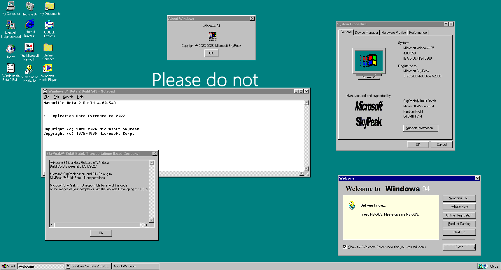

Windows 94
Full Name: Microsoft Windows 94
Codenamed: Microsoft Nashville
Status: Beta Release 2
Release Scheduled: January 2027
Release to Manufacturing: January 2027
First Release: Expected for SG59 (9th August 2024)
Ownership Part of The Company: 
Windows 94 is the 2nd Microsoft SkyPeak Product it was planned to release in Singapore's 59th National Day. It got pushed back to SG60 after it passed its
release date. No News came from Development but it was revamped. It was the 2nd OD in-development but it was revamped into an PowerPoint OS. after that no news
came and updates dried up. In 2026, New News came Out that instead of both OD or PowerPoint OS resumed, it was changed into an actual Windows OS, with Windows 95
as it's Base Windows OS. Build 450 was compiled in 4 September 2026 and The Latest Build is Build 521. Avaliable on the Pre-Releases Archive.


